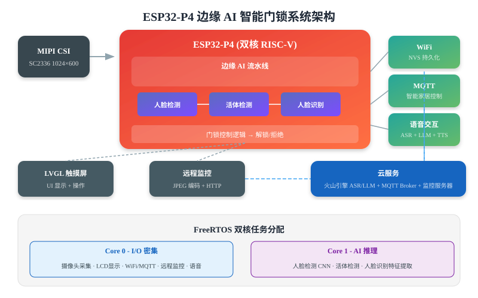
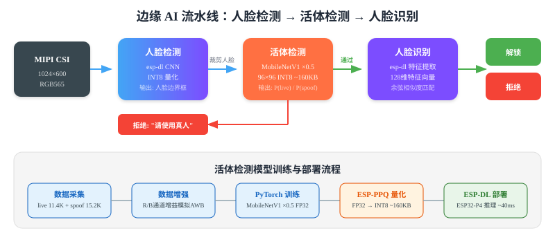

ESP32-P4 边缘 AI 智能门锁
从模型训练到 FreeRTOS 多任务调度的完整边缘 AI 系统

项目概述
基于 ESP32-P4 芯片，在端侧实现人脸检测→活体检测→人脸识别的完整流水线，配合 FreeRTOS 任务调度、WiFi 联网、MQTT 智能家居控制、语音交互等功能，构建一套完整的边缘 AI 系统。
核心特性
| 功能 | 实现方式 | 模型/算法 |
|---|---|---|
| 人脸检测 | esp-dl CNN | 量化 INT8 模型 |
| 活体检测 | MobileNetV1 ×0.5 | FP32→INT8 量化，~160KB |
| 人脸识别 | esp-dl 特征提取 + 余弦匹配 | 128 维特征向量 |
| 语音交互 | WakeNet + 流式 ASR + LLM + TTS | ESP-SR + 火山引擎 |
| 智能家居 | MQTT 协议 | 自建 Broker |
| 远程监控 | JPEG 硬件编码 + HTTP POST | 10 FPS |
边缘 AI 流水线
系统采用事件驱动的流水线架构，各阶段通过 FreeRTOS 队列连接，实现人脸检测→活体检测→人脸识别的完整链路。

活体检测（核心模块）
活体检测是防止照片/屏幕攻击的关键环节。采用 MobileNetV1 ×0.5（宽度乘数 0.5），约 37.6K 参数，INT8 量化后约 160KB。
C++ - 活体检测接口 (LivenessCNN)
namespace human_face_liveness {
struct LivenessResult {
float live_probability; // 真人概率
float spoof_probability; // 攻击概率
bool is_live(float threshold) const { return live_probability >= threshold; }
};
class LivenessCNN {
public:
LivenessCNN(const char *model_name);
// 输入：原始图像 + 人脸边界框
// 输出：活体检测结果
LivenessResult classify(const dl::image::img_t &img,
const std::vector &crop_area);
private:
dl::Model *m_model; // esp-dl 模型
dl::image::ImagePreprocessor *m_image_preprocessor; // 图像预处理
};
} // namespace human_face_liveness 推理流程
原始图像 (1024×600 RGB565) → 根据检测框裁剪人脸 → ImagePreprocessor: resize 96×96 → 归一化 → INT8 量化 → MobileNetV1 推理 (~40ms) → 输出 [P(spoof), P(live)] → 阈值判断
活体检测模型训练
数据增强策略
增强管线定向模拟 ESP32-P4 ISP 的实际行为，特别是 AWB（自动白平衡）漂移问题：
| 增强 | 是否使用 | 原因 |
|---|---|---|
| R 通道增益 | ✅ | AWB R_gain 漂移是确认的根因 |
| B 通道增益 | ✅ | AWB B_gain 同步漂移 |
| Hue 色相旋转 | ❌ | 色相旋转 ≠ AWB 通道增益，机制不同 |
| Saturation 饱和度 | ❌ | ISP ACC 模块不活跃 |
Python - 数据增强 (定向模拟 ISP AWB 漂移)
transform = transforms.Compose([
transforms.RandomHorizontalFlip(p=0.5),
transforms.ColorJitter(brightness=0.25, contrast=0.15), # AE 活跃
# R/B 通道增益增强 — 模拟 AWB 漂移（根因）
RandomChannelGain(channel='R', range=(0.80, 1.50), p=0.35),
RandomChannelGain(channel='B', range=(0.80, 1.30), p=0.35),
transforms.GaussianBlur(kernel_size=3, sigma=(0.3, 0.8)), # 运动/失焦
AddGaussianNoise(std=0.02), # 传感器噪声
transforms.ToTensor(),
transforms.Normalize(mean=[0.5, 0.5, 0.5], std=[0.5, 0.5, 0.5])
])量化部署流程
FP32
PyTorch 训练
INT8
ESP-PPQ 量化
~160KB
模型大小
~40ms
单帧推理
FreeRTOS 多任务调度
ESP32-P4 为双核 RISC-V，任务按功能分配到不同核心：Core 1 运行 AI 推理，Core 0 运行 I/O 密集任务。
| 任务 | 核心 | 栈深度 | 说明 |
|---|---|---|---|
| WhoFetchNode | Core 0 | 4KB | 摄像头帧采集 |
| WhoDetect | Core 1 | 8KB | 人脸检测 CNN 推理 |
| WhoRecognitionCore | Core 1 | 8KB | 人脸识别特征提取 |
| WhoFrameLCD | Core 0 | 4KB | LCD 显示渲染 |
| WhoRemoteMonitor | Core 0 | 8KB | JPEG 编码 + HTTP 上传 |
| WiFi/MQTT | Core 0 | 4KB | 网络通信 |
| VoiceCmd | Core 0 | 16KB | 语音唤醒 + ASR + LLM |
C++ - 任务基类 (WhoTask)
class WhoTaskBase {
public:
// 事件标志位
static constexpr EventBits_t TASK_STOPPED = 1 << 0;
static constexpr EventBits_t TASK_PAUSED = 1 << 1;
static constexpr EventBits_t TASK_STOP = 1 << 2;
static constexpr EventBits_t TASK_PAUSE = 1 << 3;
static constexpr EventBits_t TASK_RESUME = 1 << 4;
// 生命周期控制
virtual bool run(configSTACK_DEPTH_TYPE uxStackDepth,
UBaseType_t uxPriority, BaseType_t xCoreID);
virtual bool stop();
virtual bool pause();
virtual bool resume();
protected:
virtual void task() = 0; // 子类实现的任务主循环
EventGroupHandle_t m_event_group; // 状态同步事件组
TaskHandle_t m_task_handle; // 任务句柄
};网络连接与智能家居
WiFi 管理
WhoWifi 采用单例模式，全局唯一，通过状态机管理连接生命周期，支持 NVS Flash 持久化配置和自动断线重连。
C++ - WiFi 单例管理 (WhoWifi)
class WhoWifi {
public:
static WhoWifi *get_instance() {
static WhoWifi instance;
return &instance;
}
// 状态定义
typedef enum {
WIFI_STATE_INIT, // 初始化
WIFI_STATE_DISCONNECTED, // 已断开
WIFI_STATE_CONNECTING, // 连接中
WIFI_STATE_CONNECTED, // 已连接
WIFI_STATE_ERROR // 错误
} WifiState_t;
esp_err_t init(); // 初始化 WiFi 子系统
esp_err_t connect(const char *ssid, const char *password, bool save = true);
esp_err_t auto_connect(); // 自动连接上次保存的 WiFi
bool wait_connected(uint32_t timeout_ms); // 阻塞等待连接成功
};MQTT 智能家居
识别成功后通过 MQTT 上报事件（JSON 格式访问日志、Base64 抓拍照片），并支持远程控制命令。
调试历程与经验
| 版本 | 问题 | 根因 | 修复 |
|---|---|---|---|
| V1 | 输出随机 | ESP-PPQ Softmax 索引交换 | 交换 data[0]/data[1] |
| V2 | 真人被判假 | 预处理对齐不一致 | 统一预处理 |
| V2.2 | 距离依赖漂移 | ISP AWB 自动调节 | 亮度均值减法 |
| V5 | 鲁棒性提升 | R/B 通道增益增强 | 模拟 AWB 漂移 |
关键教训
- 每次只改一个变量：V2 同时改了预处理和索引，真正根因被掩盖
- 增强要匹配硬件：ISP 不活跃的模块不需要增强，活跃的（AWB）要定向模拟
- 训练-推理一致性：裁剪方式、归一化方式必须完全一致
落地成果
~160KB
模型大小
~40ms
推理延迟
10FPS
远程监控帧率
双核
RISC-V 任务隔离
技术栈
- 芯片： ESP32-P4（双核 RISC-V, 512KB SRAM）
- 开发框架： ESP-IDF v5.5.3
- AI 推理： esp-dl ~3.2.0
- 活体模型： MobileNetV1 ×0.5, INT8 ~160KB
- 任务框架： FreeRTOS（事件驱动 + 任务组管理）
- 云服务： 火山引擎 ASR/LLM + 自建 MQTT Broker